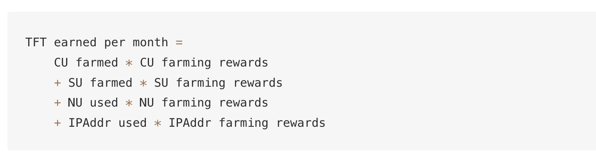
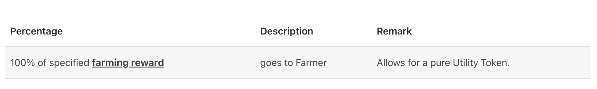
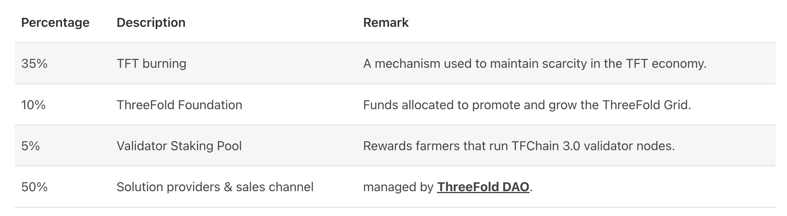

CHI = INTERNET ENERGY TOKEN DETAILS
- CHI = Internet Energy Token = is like kwatth for electricity
- 1 CHI presents compute storage, network capacity in the ThreeFold Network
- The first CHI token created was called TFT and represents Internet Capacity on the original ThreeFold grid.
Farming = the creation of the tokens
Each 3Node (a part of an edge datacenter) has certain amount of compute, storage and network resources:
- Compute Capacity (CPU)
- Memory Capacity (RAM)
- Storage Capacity (SSD/HDD)
- Network Capacity (Bandwidth, IP Addresses) For making this Internet Capacity available, Farmers are rewarded with CHI.
The amount of resources available in a 3Node are translated into compute units (CU), storage units (SU), Network units (NU) and IP addresses (IPAddr) to calculate farming rewards. See also Cloud Units Calculation For Farming.


Utilization = the use of the tokens = the utility
- A user reserves Internet capacity on a given set of 3Nodes.
- Zero-OS records the reserved and used CU, SU, NU and IPAddresses in correlation with TFChain records.
- The TFChain DAO will charge the costs to the user in line with the discount mechanism.
- CHI from the user account are burned/distributed in line to the table below.

The burning makes sure that eventually more tokens will be burned compared to created.